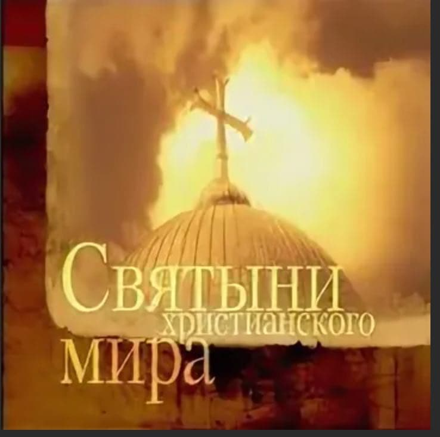
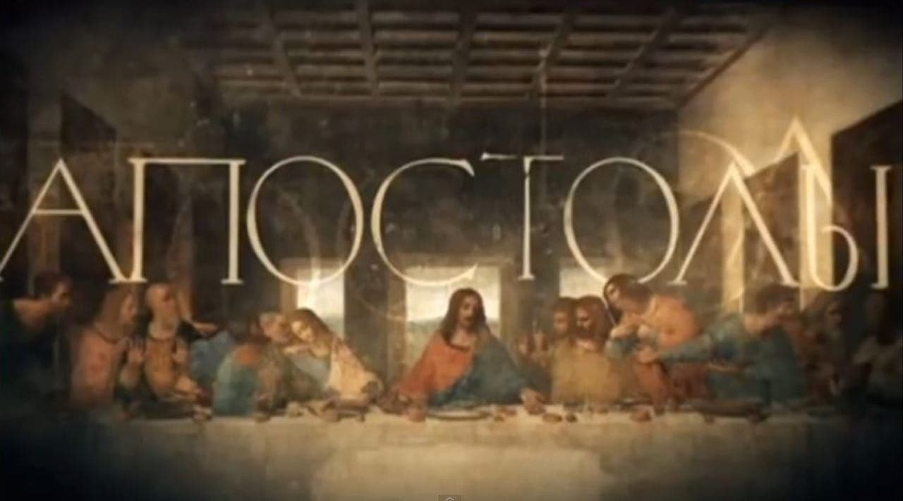
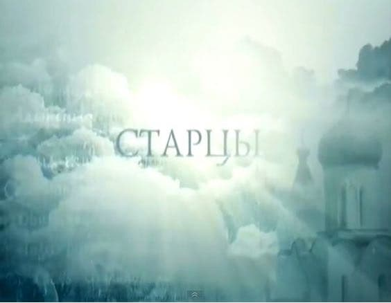
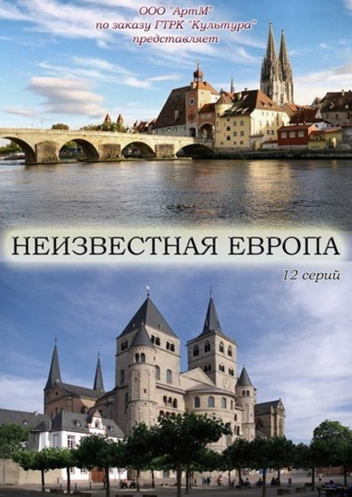
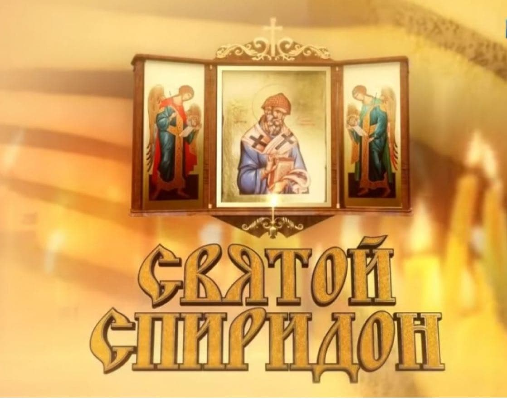
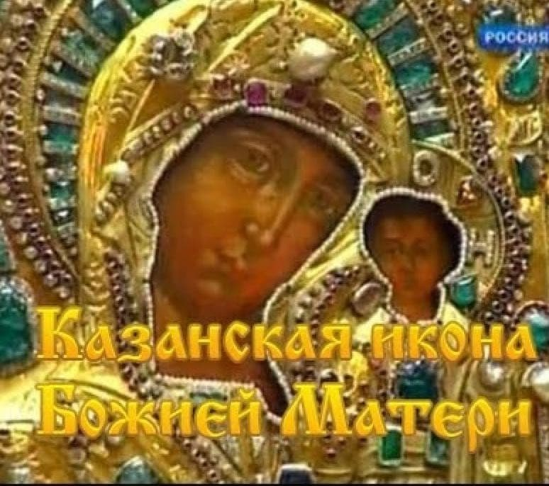
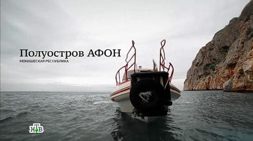
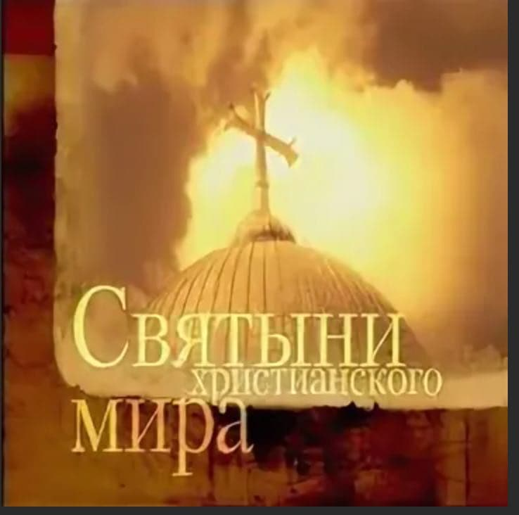
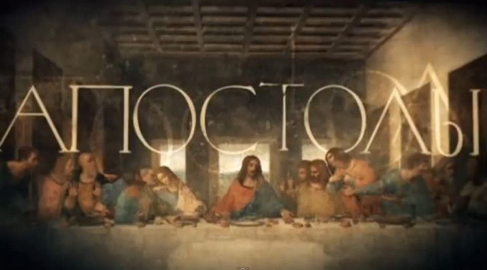
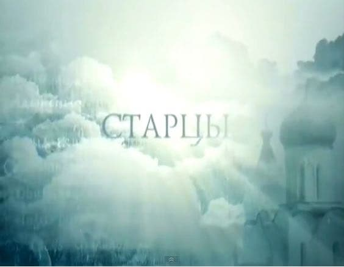
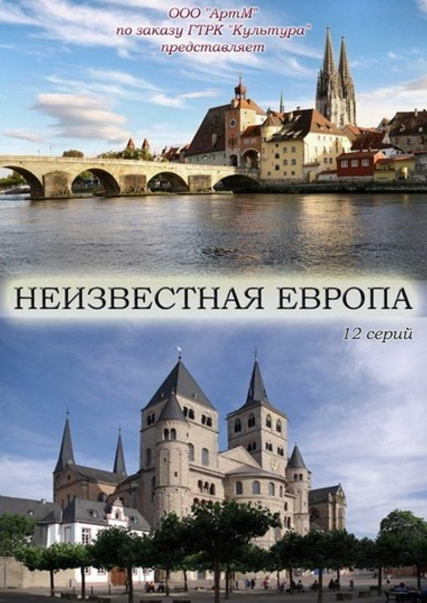
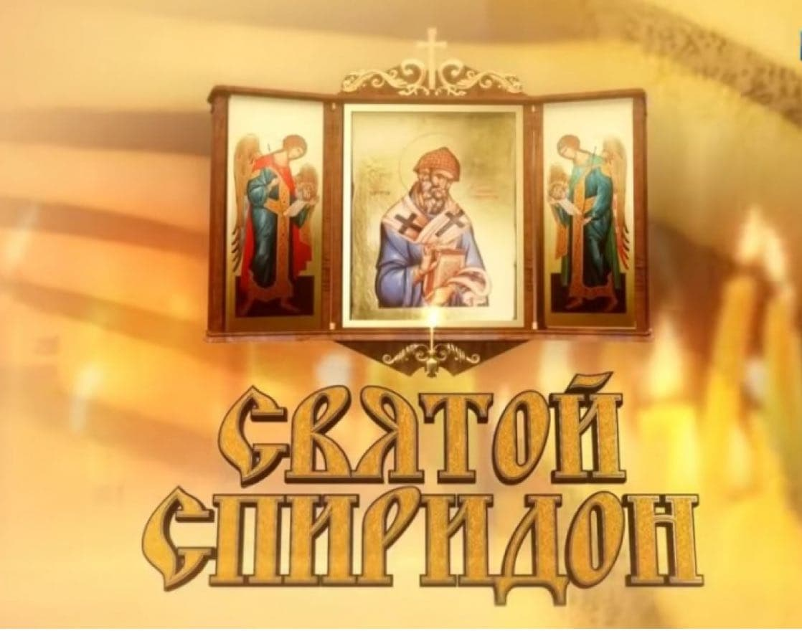
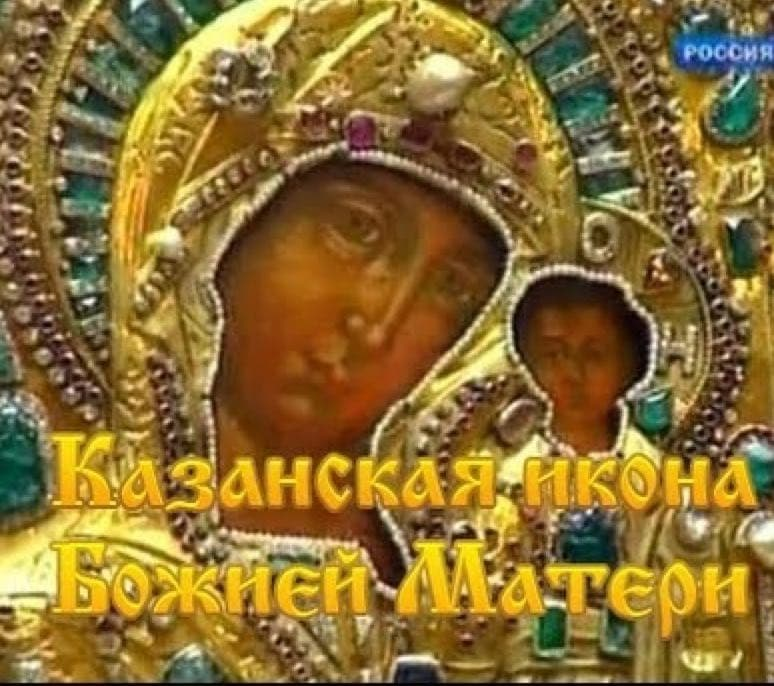
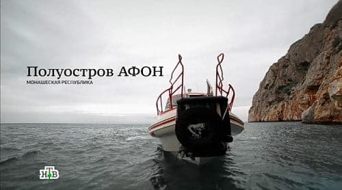
ТОП 8 интереснейших фильмов о святых и святынях.
Сохраняйте себе в заметки на тот случай, когда захочется посмотреть о добре, о христианских чудесах, подтверждённых наукой или просто расширить кругозор и наполнить душу благими знаниями.
1. «Паисий Святогорец» ( 2012 ). Режиссер: Александр Куприн. Семисерийный фильм основан на книге жития блаженной памяти старца Паисия Святогорца, воспоминаниях и свидетельствах его духовных чад, соотечественников, родных, духовенства и мирян. Снимался на Святой горе Афон, в огородах материковой Греции, на острове Керкира.
- • фильм 1. «Рождение. Детство. Молодость»
- • фильм 2. «Начало монашеского пути»
- • фильм 3. «Синайский отшельник»
- • фильм 4. «Возвращение на Афон»
- • фильм 5. «Панагуда»
- • фильм 6. «Последние год жизни»
- • фильм 7. «Прославление»
2. «Святыни христианского мира» ( 2002-2012) Режиссер: Игорь Калядин. 8 фильмов. В цикле речь идет о громких открытиях, связанных с библейской археологией. Результаты научных исследований подтверждают то, что было для христиан непреложной истиной на протяжении многих веков.
- • фильм 1. «Глава Иоанна Крестителя»
- • фильм 2. «Гроб Господень»
- • фильм 3. «Жертвенник Авраама»
- • фильм 4. «Неопалимая Купина»
- • фильм 5. «Ноев Ковчег»
- • фильм 6. «Святыни Сионской Горницы»
- • фильм 7. «Сударь»
- • фильм 8. «Тайна Грааля»
3. «Апостолы» (2014) Режиссер: Константин Голенчик Документальный цикл из 12 фильмов. 12 апостолов—двенадцать непосредственных учеников Иисуса Христа. Их жизнь и деяния в 12 сериях.
4. «Старцы» (2013) Режиссер: Константин Голенчик. Старцы— это живые святые, которым дан молитвенный и пророческий дар. Старцы несут особое, таинственное служение людям: верующие идут к ним за утешением и духовным руководством, за молитвой и советом, а порой даже за исцелениями и предсказаниями.
- • фильм 1. «Архиепископ Иоанн Шанхайский»
- • фильм 2. «Отец Николай Гурьянов»
- • фильм 3. «Архимандрит Гавриил Ургебадзе»
- • фильм 4.«Архимандрит Иоанн Крестьянкин»
5. «Неизвестная Европа» (2012) Режиссеры: Алла Плотник Автор: Тимофей Китнис 12-ти серийный документальный фильм. В фильме собраны малоизвестные истории великих святынь, людей и мест. Терновый венец Господа, плат Божией Матери, Иоанн Креститель, Мария Магдалина, просветители язычников Бонифаций и Виллиброрд, Блез Паскаль, Готфрид Буйонский, Людовик IX, Карл Великий. Париж, Неаполь, Кёльн, Венеция, Марсель, Ахен, Страсбург, Трир, Люксембург. Каждая серия имеет завершенный сюжет.
6. «Святой Спиридон» (2018) Режиссер: Ирина Прокудина Автор: Аркадий Мамонтов Святой Спиридон Тримифунтский – один из самых необычных святых. Он особо почитаем на Руси. Святой прославился тем, что обращал язычников в православную веру, излечивал больных, даже воскрешал мертвых. А после своей земной жизни святой Спиридон явил многочисленные сверхъестественные чудеса. Много удивительных случаев постоянно происходят с мощами святого. Феномен мощей святого в том, что уже на протяжении 17 веков они сохраняют температуру тела живого человека и весят как здоровый мужчина.
7. «Царица Небесная. КАЗАНСКАЯ икона Божьей Матери» (2010) Режиссер: Наталья Сергеева. Казанская икона Божией Матери— одна из самых почитаемых святынь на Руси. В трудные минуты к ней обращали свои взоры и цари, и бедняки. Накануне Полтавской битвы Петр Великий молился перед иконой Казанской Божией Матери, М.И. Кутузов, став главнокомандующим, просил покровительства у Казанской Божией Матери. Во время войны, в осажденном Ленинграде, чудотворную икону вынесли из собора, чтобы пройти по городу крестным ходом.
8. Афон. Русское наследие. Автор — корреспондент НТВ Сергей Холошевский — отправился в единственную в мире монашескую республику для того, чтобы найти здесь «русский след». Тысячу лет назад отсюда на Русь пришли первые монахи. На протяжении столетий эта земля живет по своим правилам и законам и никому не позволяет вмешиваться в свою жизнь. Получить благословение от игумена или духовника монастыря — большая удача. Монахи, ищущие путь к Богу в уединении, крайне неохотно соглашаются на съемки. Группе Сергея Холошевского удалось почти невозможное — приоткрыть завесу тайны, побывать там, где не бывала еще ни одна съемочная группа в мире.